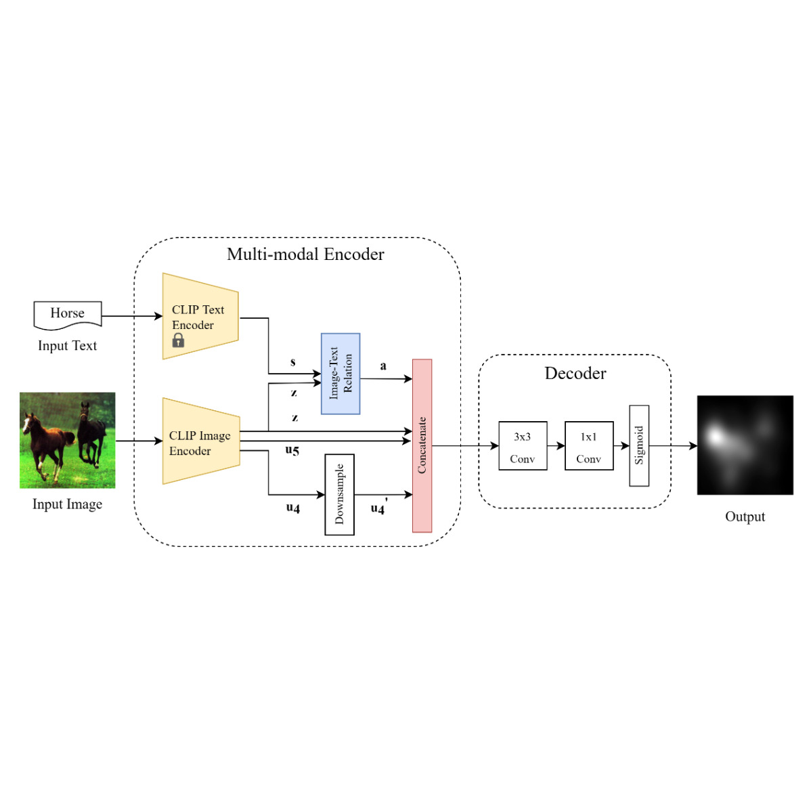

|
I received my PhD degree at City University of Hong Kong, where I was co-supervised by Prof. Jianping Wang and Prof. Xiaohua Jia. Before that, I did my Master degree at The Chinese University of Hong Kong and my Bachelor degree at Tongji University, Shanghai. My research interests lie in Autonomous Driving and Fairness in AI. Recently, I am also interested in generation models in CV & NLP. |

|
|
|
|  |
Yi Yang, Yueyuan Zheng, Didan Deng, Jindi Zhang, Yongxiang Huang, Yumeng Yang, Janet H Hsiao, Caleb Chen Cao Proceedings of the AAAI Conference on Human Computation and Crowdsourcing, 2022 [Paper] Proposing a human-based benchmark dataset for evaluating saliency-based XAI methods and a model capable of imitating human and generating saliency maps. |
 
|
Dan Su, Xiaoguang Li, Jindi Zhang, Lifeng Shang, Xin Jiang, Qun Liu, Pascale Fung ACL Findings, 2022 [paper] Proposing a new end-to-end framework that jointly models answer generation and machine reading. The key idea is to augment the generation model with fine-grained, answer-related salient information which can be viewed as an emphasis on faithful facts. |